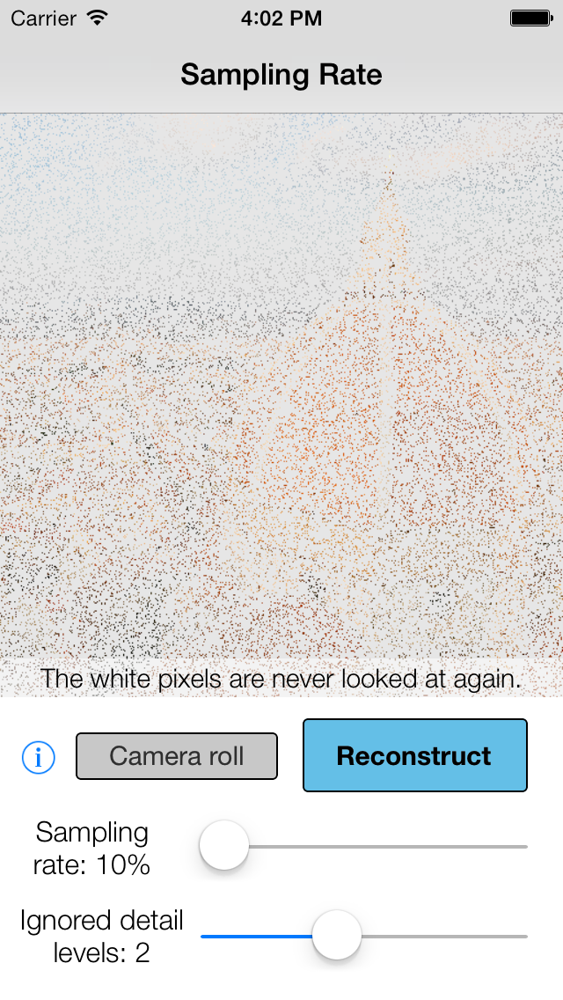

<p><link rel="stylesheet" type="text/css" href="helper/tomorrow.css"></p>

<!--link the icon-->
<!--<link rel="icon" type="image/gif" href="icon.gif" />-->
<link rel="apple-touch-icon" href="/icon.png" />

 <!--for ios viewing-->
 <meta name = "viewport" content = 
"initial-scale = 1.0,
user-scalable = yes">

<body>
<div style="text-align: center;">
    
    
    <h1>iSparse
    <!--</h1>-->
    <br>
    <font size="3" style="color:gray">
        An app that reconstructs an image from point samples
        <!--<br>-->
        <!--<br>-->
    </font>
    <br>
    </h1>
    <html>
      <head>
        <script src="helper/jquery.js"></script>
        <script>
        $(function(){
          $("#navBar").load("helper/nav.html");
        });
        </script>
      </head>

      <body>
         <div id="navBar"></div>
      </body>
    </html>
</div>

 
<html>
  <head>
    <script src="jquery.js"></script>
    <script>
    $(function(){
      $("#mainInfo").load("markdown/implementation.html");
    });
    </script>
  </head>

  <body>
     <div id="mainInfo"></div>
  </body>
</html>
<div class="footer">
    <div style="text-align: center; padding-top: 2em"><font size="2">
        <a style="padding-left:1em; padding-right=1em" 
            href="http://www.tc.umn.edu/~sonix022/">Akshay Soni</a>
        <a style="padding-left:1em; padding-right=1em" 
            href="http://scottsievert.github.io">Scott Sievert</a>
        <a style="padding-left:1em; padding-right=1em" 
            href="http://www.ece.umn.edu/~jdhaupt/">Jarvis Haupt</a>
<br>
<br>
<br>
<br>
</font></div>

</body>
